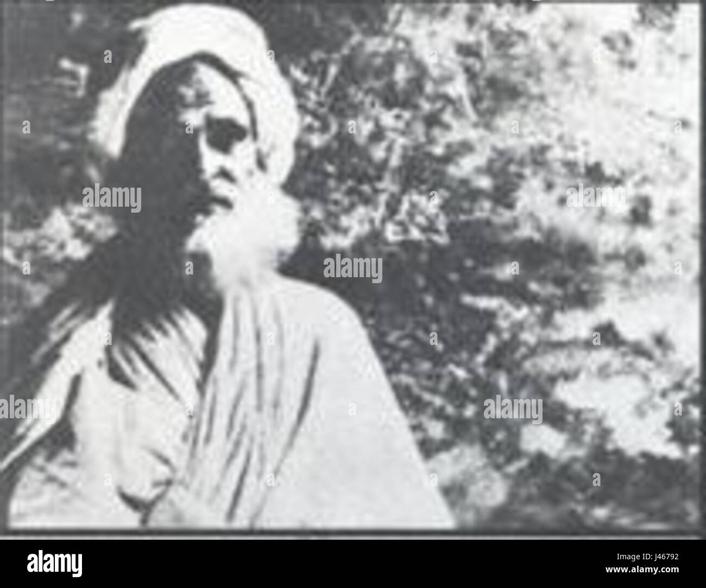
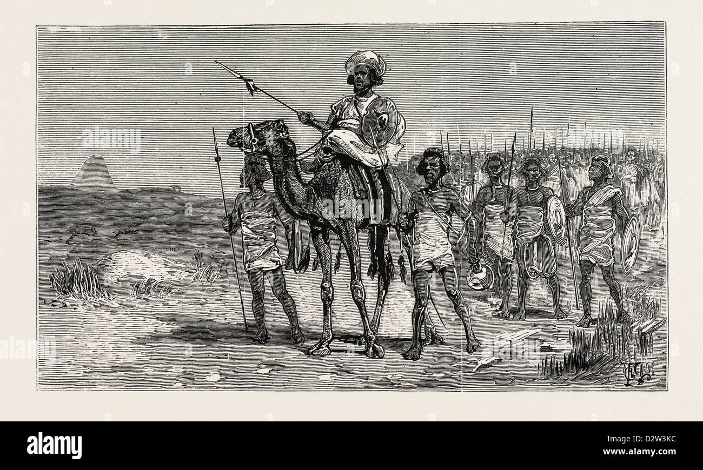
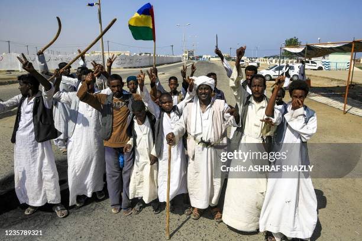
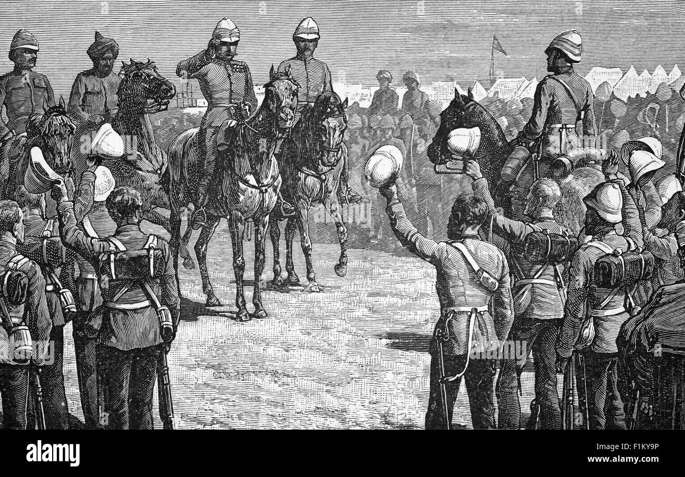

Welcome to the Tribute Website
This website is dedicated to Osman Digna, a prominent Sudanese military leader and one of the key figures in the Mahdist War.
Biography
Osman Digna was born in Sudan in 1840. He was a leader in the Mahdist movement and played a significant role in resisting the British-Egyptian forces during the Mahdist War. Known for his military acumen, he was a key commander in the Sudanese revolt against colonial rule.
Digna's leadership in the defense of Sudan became legendary, as he led many successful campaigns that contributed significantly to the success of the Mahdist revolution in the late 19th century.
Legacy

Osman Digna's legacy is deeply intertwined with the history of Sudanese resistance against colonialism. His leadership inspired future generations of Sudanese fighters and revolutionaries, and he remains a symbol of resistance and patriotism in Sudanese culture.
Timeline of Key Events
- 1881: Osman Digna joins the Mahdist movement and becomes a prominent leader.
- 1884: Led several successful campaigns against British-Egyptian forces.
- 1885: Played a pivotal role in the fall of Khartoum and the rise of the Mahdist state.
- 1898: After the fall of the Mahdist state, Osman Digna continued to resist British control, but he was eventually captured and exiled.
Photo & Media Gallery
Images and media of Osman Digna and the Mahdist movement.
Leave a Tribute
Feel free to share your thoughts and memories of Osman Digna.